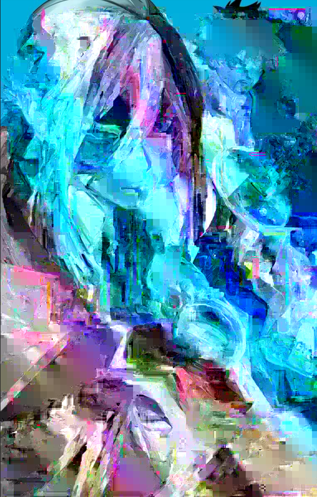

Glitch 1: I achieved this look by using Audacity with the raw image data and applying the effects: repeat, delay and distort. For the sliding settings, I honestly went rouge and changed them randomly. It turned out better than I expected to be, still keeping some color stand out. (Gachiakuta Volume 3)
Glitch 2: This was edited and glitched on Notepad ++ (text edit). I decided to write out the lines "i think everyone should read phantom busters" (which sounds like a great idea) and "bleh" and copy and pasted these a few times throughout the text.I loved the blue/teal focus, since the original cover's main point was blue and wanted to emphasize that feeling. (Phantom Busters Volume 7)
Glitch 3: This final edit was done on Audacity again, since I liked having fun with the effects. The effects used were: echo and reverb.It gives off a deeper meaning onto the plot of the story if you had read it. It also looks like an optical illusion which I thought was cool and kept it. (Gokurakugai Volume 1)